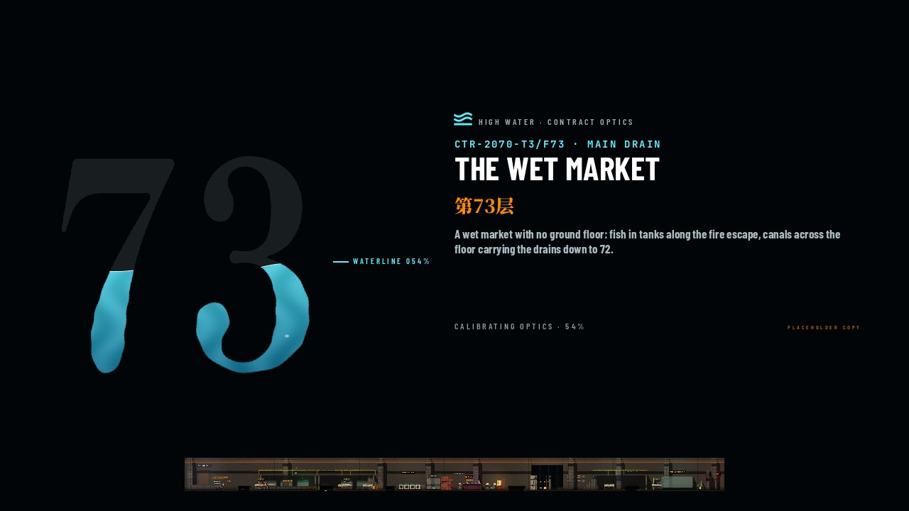
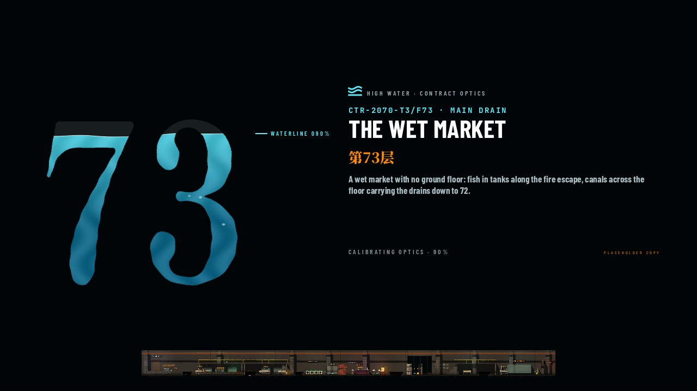
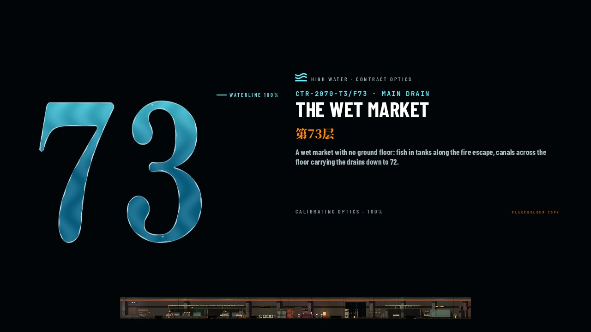
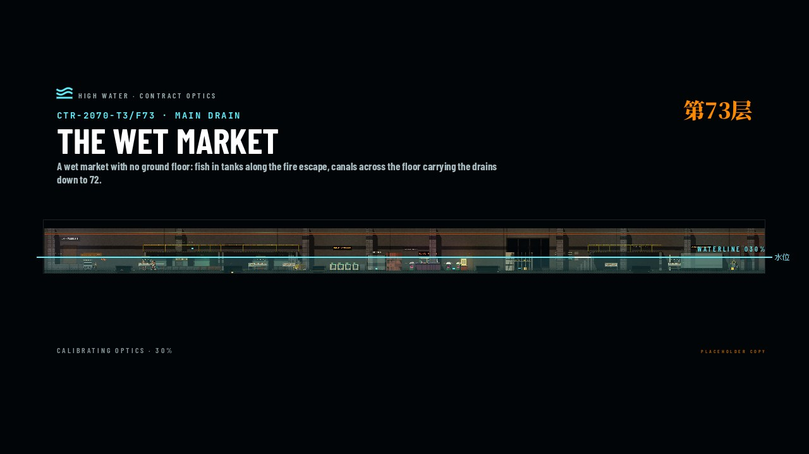
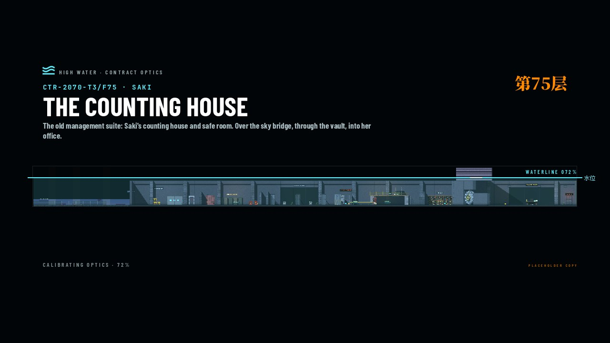
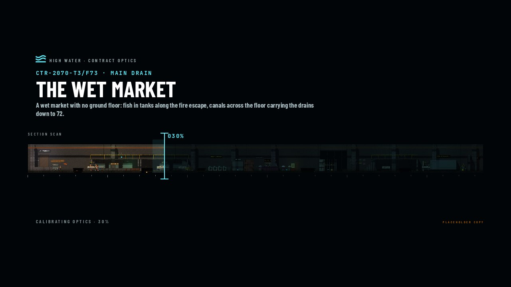
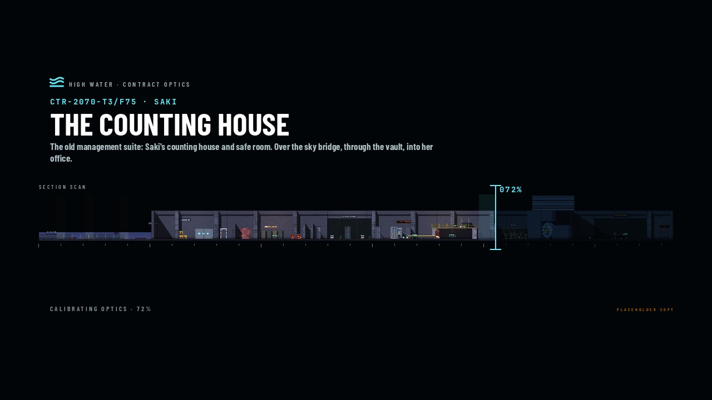
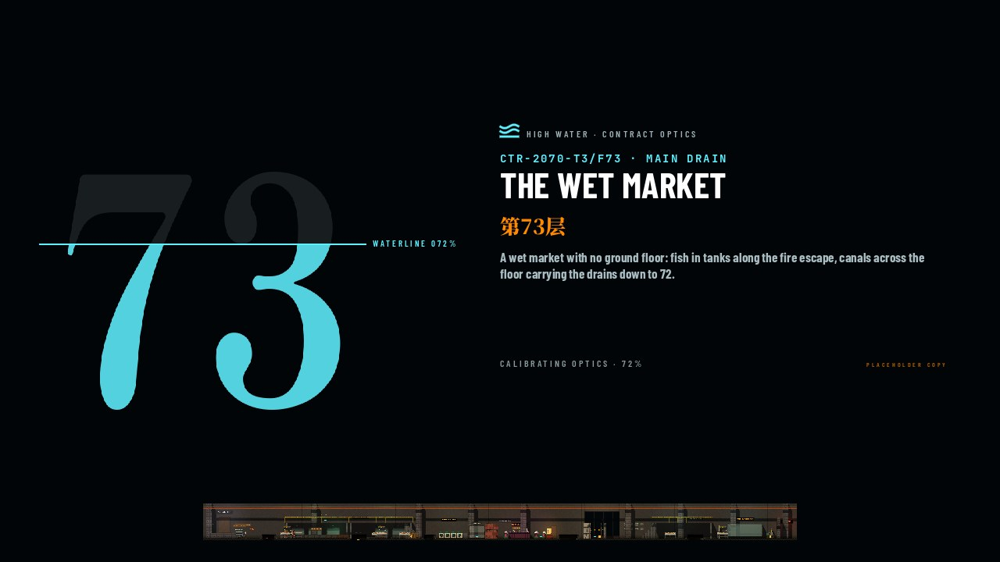
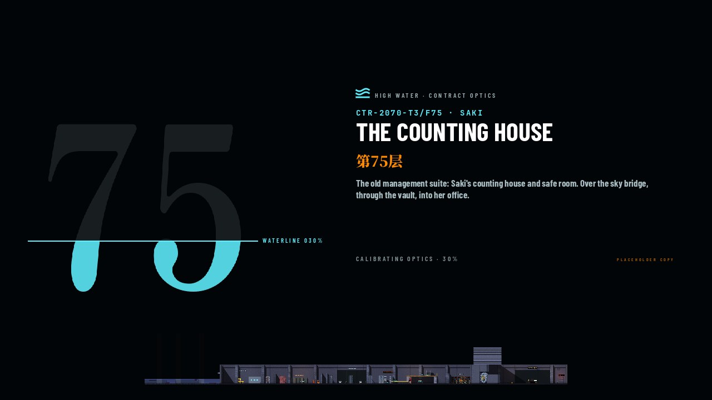

Loading: the floor warms up
Board · Readout · 2026-09-30 · pick one
Jonas: "id much rather have loading then stutter, but lets put up a highquality loading screen." Slipway's warm-up draws every material once and sweeps the camera across the whole floor, so WebGL compiles each shader before play. That takes about 15 s cold and about 2 s on a cached visit. Today it runs hidden behind the briefing.
The screen covers it with real progress. It fades in only if the warm-up is still running after about 0.4 s, so a cached visit never flashes it. It draws on the native-resolution UI layer while the world warms behind it, and the music holds. All three looks use Plumb's section plate of the floor (assets/ui/cutaway/fNN.png). Every line of copy is placeholder; Jonas writes the final words.
These are real frames from LoadingScreen (tools/ui/loading_board.tscn) at 1280×720, for F73 and F75 at 30 % and 72 %.
Built: C, with the water made liquid
Jonas picked C and asked: "maybe we can make the numerals more fluidy, or the loading?" The flood in the numeral is now a shader on the numeral's mask (liquid_numeral.gdshader, one material, uniforms only per frame).
- The surface is a wave of three sines.
- Each progress step surges up and settles: a spring in real time, so long warm-up frames don't slow it down. The surface leans with the surge.
- A bright meniscus rides the surface.
- The glyph's edge wobbles under the water.
- Bubbles rise, and a caustic band drifts through the water.
- On finish the numeral brims over with a foam rim for half a second, then fades.
- The WATERLINE tag and
CALIBRATING OPTICS · N%ride the surface.
Copy is still placeholder. The 0.4 s rule holds: a quick load never shows the screen.



Also: liquid_0 (early), liquid_1, liquid_4.


A · Waterline


B · Section scan


C · Numeral


look).How it will be wired
- Progress:
Warmup.progress(0..1), a flag while it runs, and a done signal. I've asked Slipway for the hook inwarmup.gd: the sweep drives 5–90 %, since its screen count is known up front, and the held draws drive the rest. - Flow: contract → the level loads → the screen, if the warm-up is still running after 0.4 s → the briefing once it's done. The world is paused (the warm-up already runs paused), so nothing plays underneath.
- Cost: one Control on the UI layer, redrawn each frame (a few text strings and one texture). The status line reads
CALIBRATING OPTICS · 63%(placeholder).
Other frames in loading/: a_f73_72, a_f75_30, b_f73_72, b_f75_30, c_f73_30, c_f75_72.